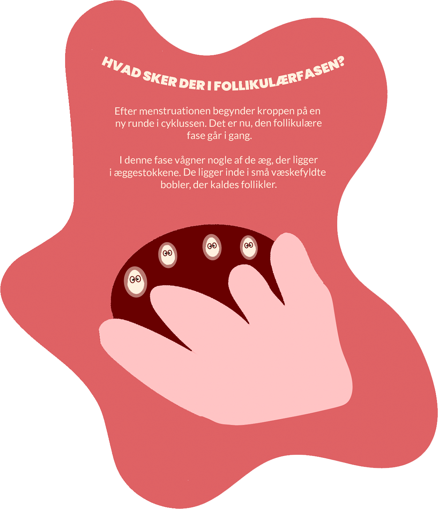

Lutealfasen

1. Hvad sker der med humøret i lutealfasen?
Humørsvingninger
Meget glad
Ked af det
2. Hvad kaldes humørsvingningerne også?
KTB
Udbrud
PMS
3. Hvordan skal man behandle kroppen i lutealfasen?
Dyrke massere af sport
Være god og sød mod sig selv
Sove gennem hele fasen
Prøv igen